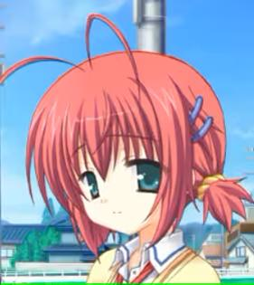
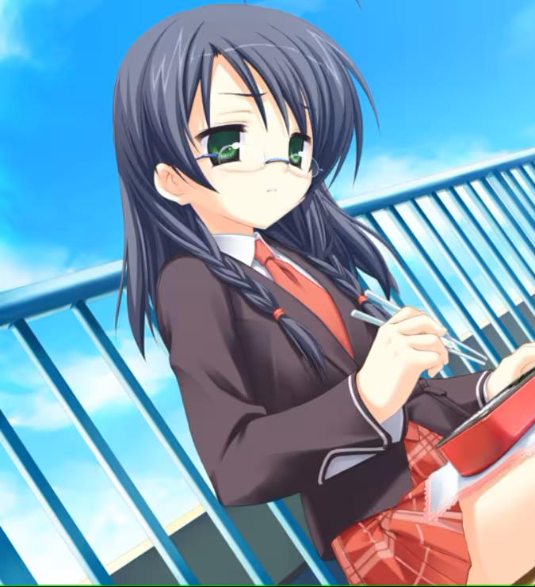

剧情介绍
这是一个在一座乡间城镇发生的故事，男主——香住纯——所在的赤城山学校因为持续已久的少子化导致的生源不足，终于废校，与圆山学校合并。春假后，男主将前往圆山学校读书学习。 而当赤城山学校的学生来到圆山学校时，男主所在的赤城山管乐团的各位却被一位中年大叔掌控着的圆山管乐团拒绝接纳，原因竟然是“我的社团只会训练精英，不会接受乐色”，双方的冲突一触即发。 只能保留一个管乐团的圆山学校，决定以乐器演奏决斗的方式来决定，哪边的管乐团得到的投票人数多，哪边的管乐团就得以保留，决斗的日期被定在5月2日，距离决斗也只有区区22天了。 就在此时，男主的肩膀被指导老师拍了拍：“新的社长，就决定是你了哦。” 男主如何带领众人，在破旧不堪的旧仓库，去击败有着恒温恒湿的音乐室和器材室，以及有着为了获胜无恶不作的中年大叔的，在前一年获得了银奖的强大敌人呢。
中之岛妙
居住在男主香住纯隔壁的，男主的青梅竹马，从小就和男主玩得很好了，每天都会早起叫男主起床并一起上学，是个非常单纯的姑娘，男主说什么都会相信；行动力也很强，说到就一定会做到，有一手好厨艺。演奏的乐器是长号。每天粘着男主的中之岛妙也许有什么未曾说出口的感情存在呢，不过，如果只是一味地等待，就不会迎来开始吧。

海老原水濑
一年级的学妹，看起来非常活泼外向的孩子，擅长的乐器是小号（Zun号），因为姓氏与虾谐音（エビ），所以被大家称为虾子，本人对此非常讨厌，但偏偏有着两个像触须一样的呆毛。经常在练习时带着零食偷懒，还好几次被抓到放学后在外面晃悠到很晚不回家，也许她有着什么难言之隐吧，谁知道呢。

今宫纪子
男主的班长，给人以十分靠谱的感觉，办事认真，思维缜密，但是似乎也会有着不擅长的东西。演奏的乐器是单簧管。在社团中也是非常认真的角色，很多时候替男主弥补了所欠缺的一面。这样优秀的女生应该是非常自信的吧，应该吧。